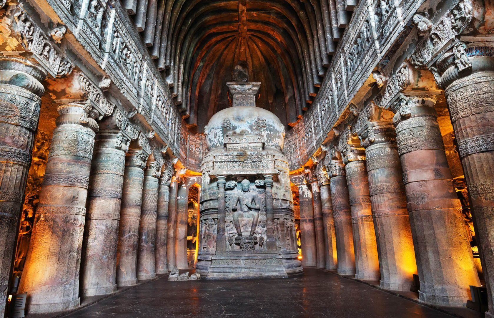

Monument 1

Taj Mahal:
'Crown of the Palace' originally the Rauza-i-munawwara is an ivory-white marble mausoleum on the southern bank of the river Yamuna in the Indian city of Agra. It was commissioned in 1632 by the Mughal emperor Shah Jahan (reigned from 1628 to 1658) to house the tomb of his favourite wife, Mumtaz Mahal; it also houses the tomb of Shah Jahan himself. The tomb is the centrepiece of a 17-hectare (42-acre) complex, which includes a mosque and a guest house, and is set in formal gardens bounded on three sides by a crenellated wall.
Monument 2

Charminar:
The Charminar is situated on the east bank of Musi river.
To the west lies the Laad Bazaar, and to the southwest lies the richly ornamented granite Makkah Masjid.
It is listed as an archaeological and architectural treasure on the official "List of Monuments" prepared by the Archaeological Survey of India.[7] The English name is a translation and combination of the Urdu words chār and minar or meenar, translating to "Four Pillars"; the eponymous towers are ornate minarets attached and supported by four grand arches
Monument 3
Ajanta:
They are universally regarded as masterpieces of Buddhist religious art. The caves were built in two phases, the first starting around the 2nd century BCE and the second occurring from 400 to 650 CE, according to older accounts, or in a brief period of 460–480 CE according to later scholarship. The site is a protected monument in the care of the Archaeological Survey of India, and since 1983, the Ajanta Caves have been a UNESCO World Heritage Site.